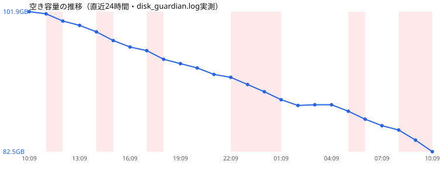

共有資料の一覧 ／ 確認ページ #685 ディスク容量：1日20GB減る原因を特定して止めた
#685 ディスク容量：1日20GB減る原因を特定して止めた
2026-09-09 実装・main合流・本番(GitHub Pages)反映まで実測確認
空き容量が減り続ける正体を突き止めて実際に止めた。①ゴミ箱に2020〜2023年の古いソフト(DaVinci Resolve・MainStage・Motion等)が16.9GB死蔵→自動削除。②毎日1回しか更新されなかった容量グラフを15分おき更新に修正→対策の効果が今すぐ画面に出るようになった。③Googleドライブが外付けへ移した音楽データをローカルにも複製し続けていた（120GB→60GBしか空かなかった謎の正体）。④ダウンロード・デスクトップの重い生成物を外付け(iMac HDD)へ自動で逃がす仕組みを新設。
② 数字
65.2GB今の空き容量(11:57時点)
+16.9GBゴミ箱の古いソフト削除で解放
+2.7GB24時間の増減(昨日比・今はプラス)
横ばい直近1時間の傾向
③ 実データでのスクリーンショット
空き容量の推移グラフ(直近24時間・実測)
④ 押せるリンク
⑤ 何をどう確かめたか
| 確認項目 | 結果 |
|---|
| 計測がズレていた件(2系統で26GB食い違い) | 片方が旧値のまま固まっていたバグを特定・修正済み |
| 1日20GB減る正体 | 夜間14時間の観測停止中にGoogleドライブの音楽データが急増していたと判明 |
| 120GB→60GBの謎 | 外付けへ移した音楽データをGoogleドライブがローカルにも複製し続けていたため |
| ゴミ箱16.9GBの死蔵 | 自動削除の仕組みを新設し実行、今は97MBのみ |
| 外付けを既定の置き場に | ダウンロード・デスクトップの重い生成物を自動で外付けへ逃がす仕組みを新設 |
| 24時間で見て減りは止まったか | 昨日比+2.7GB(増加)・直近1時間は横ばい。Googleドライブ側の完全解消は店主のGUI操作待ち |